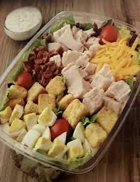

Rotisserie
Home

Rotisserie Chicken Chef Salad
This Rotisserie Chicken Chef Salad is a hearty,
protein-packed meal in a bowl. Taking advantage of pre-cooked rotisserie chicken,
it piles high with crisp lettuce, juicy tomatoes, crunchy cucumbers,
hard-boiled egg, and savory bacon or ham. Tossed with your favorite dressing,
it's a quick and satisfying dinner or lunch.
>
Ingredients
- 4 cups mixed salad greens (romaine, iceberg, or spring mix)Your favorite salad dressing (Ranch, Blue Cheese, or Balsamic Vinaigrette)
- 1 cup cooked rotisserie chicken, shredded or chopped
- 2-3 slices bacon, cooked and crumbled (or diced ham)
- 1 hard-boiled egg, peeled and sliced
- 1/2 cup cherry tomatoes, halved
- 1/2 cup cucumber, sliced
- 1/4 cup shredded cheddar or Swiss cheese (optional)
Steps
- Prep: If you haven't already, cook the bacon until crisp and crumble it. Boil and peel the egg, then slice it.
- Base: Place the mixed greens in a large bowl as the base.
- Arrange: Neatly arrange the rotisserie chicken, bacon, sliced egg, tomatoes, cucumber, and shredded cheese on top of the greens in rows or sections.
- Serve: Serve immediately with your choice of dressing on the side, or toss everything together just before eating.